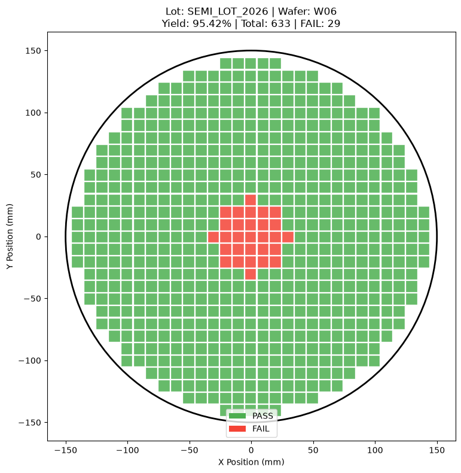
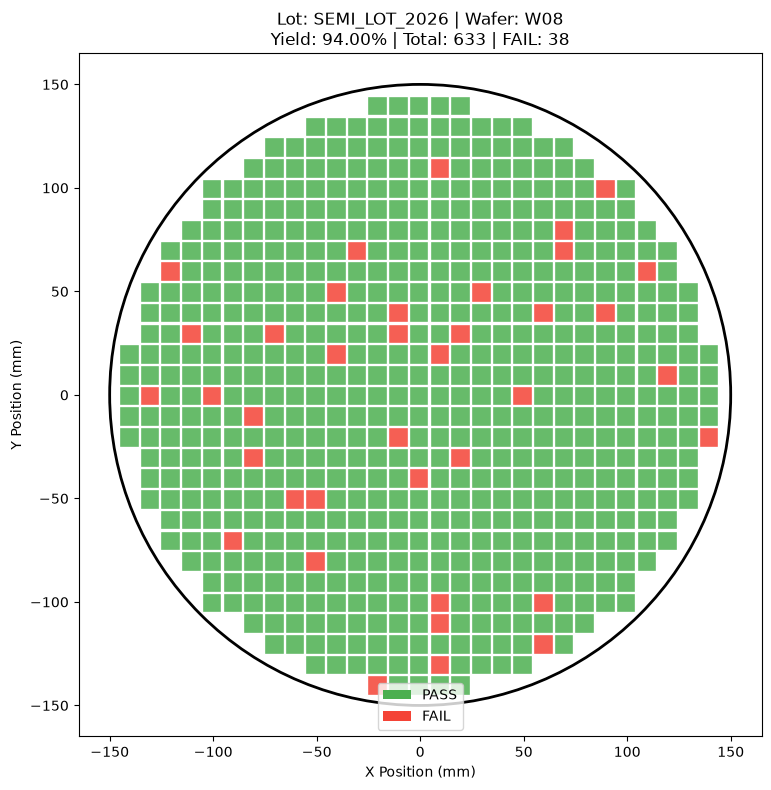

Center Defect Wafer Map

결과 해석 · 공정 관점
중심 결함 패턴의 실제 노트북 시각화입니다. 패턴의 공간적 위치는 공정 편차 원인을 좁히기 위한 중요한 단서입니다.
FAIL Die의 반경 분포, 방향성, 공간적 집중도를 수치화하여 웨이퍼 불량 패턴을 자동으로 분류하고 패턴별 공정 점검 방향까지 제안하는 분석 프로젝트입니다.
실제 제조 환경에서는 많은 수의 Wafer Map을 엔지니어가 육안으로 반복 확인하기 어렵습니다.
FAIL Die의 평균 반경을 계산하여 불량이 웨이퍼 중심부에 집중되는지, 가장자리에 집중되는지를 판단합니다.
FAIL Die 반경의 표준편차를 계산하여 특정 반경 구간에 불량이 집중되는 Ring 형태인지 판단하는 데 활용합니다.
FAIL Die의 각도를 Circular Statistics 방식으로 분석하여 특정 방향에 불량이 집중되는지를 계산합니다.
FAIL Die 간 최소 거리를 이용하여 불량이 공간적으로 얼마나 가까이 모여 있는지 나타내는 지표를 계산했습니다.
Ring, Center, Scratch, Random 형태의 샘플 웨이퍼를 동일한 분류 함수에 입력하여 공간적 특징을 기반으로 패턴을 판별하도록 구성했습니다.
단순히 패턴 이름만 반환하지 않고 각 분류 조건의 강도를 이용해 0~1 범위의 Confidence 값을 함께 반환하도록 구현했습니다.
증착 균일도와 Edge 영역의 공정 조건을 우선 점검할 수 있도록 조치 방향을 제안합니다.
중심부 온도 프로파일이나 중심 Gas Flow와 같은 공간적 공정 조건을 확인하도록 구성했습니다.
CMP Pad 상태나 Particle 오염 등 선형 불량과 연결될 수 있는 공정 요인을 우선 확인하도록 제안합니다.
특정 공간 패턴이 없는 경우 Particle Count, 노광 오차 등 다른 공정 데이터를 함께 확인하도록 제안합니다.
이 프로젝트의 핵심은 Wafer Map을 단순 이미지로 보는 데서 끝내지 않고, 공간적 특징을 숫자로 변환하여 반복 가능한 분석 로직으로 구현했다는 점입니다.
Wafer 불량 패턴 자동 분류 코드는 GitHub Jupyter Notebook에서 확인할 수 있습니다.
View Notebook on GitHub →Wafer 불량 패턴 분류기의 실제 실행 결과입니다.
실제 분석 결과 보기 →아래 그래프는 해당 Python 노트북에서 실제 실행되어 저장된 출력입니다.

결과 해석 · 공정 관점
중심 결함 패턴의 실제 노트북 시각화입니다. 패턴의 공간적 위치는 공정 편차 원인을 좁히기 위한 중요한 단서입니다.

결과 해석 · 공정 관점
Scratch 패턴의 실제 노트북 시각화입니다. 선형 결함은 웨이퍼 취급 및 장비 접촉 요인과 함께 검토할 수 있습니다.

결과 해석 · 공정 관점
Random 패턴의 실제 노트북 시각화입니다. 위치 의존성이 낮은 결함은 Lot·시간·환경 단위로 추가 분석할 수 있습니다.

결과 해석 · 공정 관점
패턴별 수율 비교 결과입니다. 분류 모델은 이처럼 패턴과 수율 정보를 함께 제시할 때 공정 대응의 우선순위 설정에 활용할 수 있습니다.